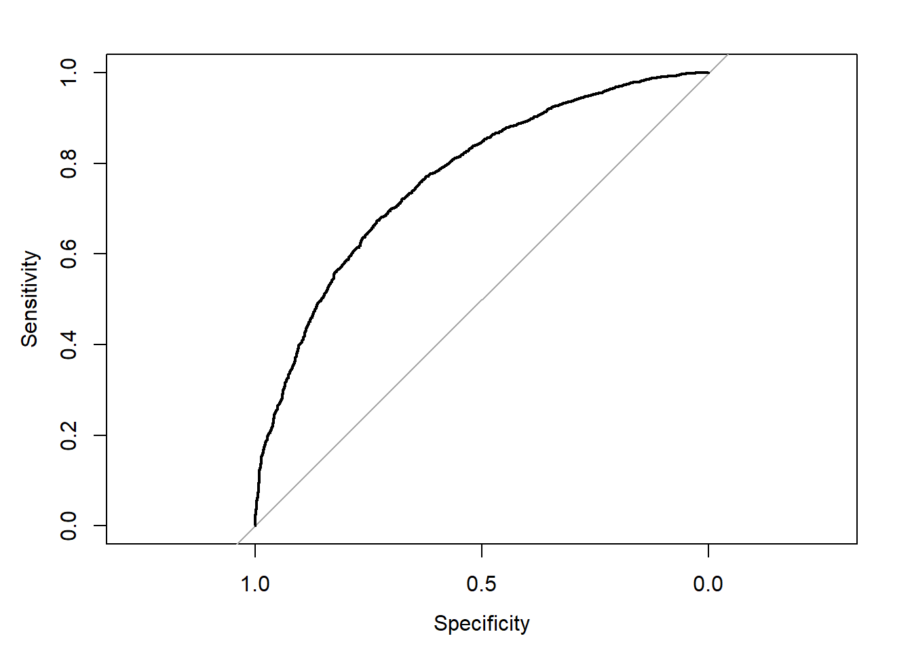

Chapter 5 Prediction from binary outcome
5.1 Read previously saved data
ObsData <- readRDS(file = "data/rhcAnalytic.RDS")5.2 Outcome levels (factor)
- Label
- Possible values of outcome
levels(ObsData$Death)=c("No","Yes") # this is useful for caret
# ref: https://tinyurl.com/caretbin
class(ObsData$Death)## [1] "factor"table(ObsData$Death)##
## No Yes
## 2013 37225.3 Measuring prediction error
-
Brier score
- Brier score 0 means perfect prediction, and
- close to zero means better prediction,
- 1 being the worst prediction.
- Less accurate forecasts get higher score in Brier score.
-
AUC
- The area under a ROC curve is called as a c statistics.
- c being 0.5 means random prediction and
- 1 indicates perfect prediction
5.3.1 Prediction for death
In this section, we show the regression fitting when outcome is binary (death).
5.4 Variables
baselinevars <- names(dplyr::select(ObsData,
!c(Length.of.Stay,Death)))
baselinevars## [1] "Disease.category" "Cancer" "Cardiovascular"
## [4] "Congestive.HF" "Dementia" "Psychiatric"
## [7] "Pulmonary" "Renal" "Hepatic"
## [10] "GI.Bleed" "Tumor" "Immunosupperssion"
## [13] "Transfer.hx" "MI" "age"
## [16] "sex" "edu" "DASIndex"
## [19] "APACHE.score" "Glasgow.Coma.Score" "blood.pressure"
## [22] "WBC" "Heart.rate" "Respiratory.rate"
## [25] "Temperature" "PaO2vs.FIO2" "Albumin"
## [28] "Hematocrit" "Bilirubin" "Creatinine"
## [31] "Sodium" "Potassium" "PaCo2"
## [34] "PH" "Weight" "DNR.status"
## [37] "Medical.insurance" "Respiratory.Diag" "Cardiovascular.Diag"
## [40] "Neurological.Diag" "Gastrointestinal.Diag" "Renal.Diag"
## [43] "Metabolic.Diag" "Hematologic.Diag" "Sepsis.Diag"
## [46] "Trauma.Diag" "Orthopedic.Diag" "race"
## [49] "income" "RHC.use"5.5 Model
# adjust covariates
out.formula2 <- as.formula(paste("Death~ ",
paste(baselinevars,
collapse = "+")))
saveRDS(out.formula2, file = "data/form2.RDS")
fit2 <- glm(out.formula2, data = ObsData,
family = binomial(link = "logit"))
require(Publish)
adj.fit2 <- publish(fit2, digits=1)$regressionTableout.formula2## Death ~ Disease.category + Cancer + Cardiovascular + Congestive.HF +
## Dementia + Psychiatric + Pulmonary + Renal + Hepatic + GI.Bleed +
## Tumor + Immunosupperssion + Transfer.hx + MI + age + sex +
## edu + DASIndex + APACHE.score + Glasgow.Coma.Score + blood.pressure +
## WBC + Heart.rate + Respiratory.rate + Temperature + PaO2vs.FIO2 +
## Albumin + Hematocrit + Bilirubin + Creatinine + Sodium +
## Potassium + PaCo2 + PH + Weight + DNR.status + Medical.insurance +
## Respiratory.Diag + Cardiovascular.Diag + Neurological.Diag +
## Gastrointestinal.Diag + Renal.Diag + Metabolic.Diag + Hematologic.Diag +
## Sepsis.Diag + Trauma.Diag + Orthopedic.Diag + race + income +
## RHC.useadj.fit2## Variable Units OddsRatio CI.95 p-value
## 1 Disease.category ARF Ref
## 2 CHF 1.0 [0.8;1.4] 0.8
## 3 Other 1.6 [1.3;2.0] <0.1
## 4 MOSF 1.0 [0.9;1.2] 0.7
## 5 Cancer None Ref
## 6 Localized (Yes) 6.6 [2.2;19.4] <0.1
## 7 Metastatic 26.4 [8.3;83.6] <0.1
## 8 Cardiovascular 0 Ref
## 9 1 1.3 [1.0;1.5] <0.1
## 10 Congestive.HF 0 Ref
## 11 1 1.6 [1.3;1.9] <0.1
## 12 Dementia 0 Ref
## 13 1 1.3 [1.0;1.6] <0.1
## 14 Psychiatric 0 Ref
## 15 1 0.9 [0.7;1.2] 0.6
## 16 Pulmonary 0 Ref
## 17 1 1.0 [0.9;1.2] 0.7
## 18 Renal 0 Ref
## 19 1 1.3 [0.9;1.9] 0.2
## 20 Hepatic 0 Ref
## 21 1 1.3 [0.9;1.8] 0.1
## 22 GI.Bleed 0 Ref
## 23 1 1.2 [0.8;1.9] 0.3
## 24 Tumor 0 Ref
## 25 1 0.3 [0.1;0.9] <0.1
## 26 Immunosupperssion 0 Ref
## 27 1 1.2 [1.1;1.4] <0.1
## 28 Transfer.hx 0 Ref
## 29 1 0.8 [0.7;1.0] <0.1
## 30 MI 0 Ref
## 31 1 0.8 [0.6;1.2] 0.3
## 32 age [-Inf,50) Ref
## 33 [50,60) 1.4 [1.2;1.8] <0.1
## 34 [60,70) 2.1 [1.7;2.5] <0.1
## 35 [70,80) 2.1 [1.6;2.6] <0.1
## 36 [80, Inf) 2.8 [2.1;3.8] <0.1
## 37 sex Male Ref
## 38 Female 0.8 [0.7;0.9] <0.1
## 39 edu 1.0 [1.0;1.0] 0.4
## 40 DASIndex 1.0 [0.9;1.0] <0.1
## 41 APACHE.score 1.0 [1.0;1.0] <0.1
## 42 Glasgow.Coma.Score 1.0 [1.0;1.0] <0.1
## 43 blood.pressure 1.0 [1.0;1.0] 0.4
## 44 WBC 1.0 [1.0;1.0] 0.2
## 45 Heart.rate 1.0 [1.0;1.0] 0.7
## 46 Respiratory.rate 1.0 [1.0;1.0] 0.8
## 47 Temperature 0.9 [0.9;1.0] <0.1
## 48 PaO2vs.FIO2 1.0 [1.0;1.0] 0.3
## 49 Albumin 1.0 [0.9;1.1] 0.6
## 50 Hematocrit 1.0 [1.0;1.0] <0.1
## 51 Bilirubin 1.0 [1.0;1.1] <0.1
## 52 Creatinine 1.0 [1.0;1.0] 0.9
## 53 Sodium 1.0 [1.0;1.0] 0.7
## 54 Potassium 1.0 [0.9;1.1] 0.9
## 55 PaCo2 1.0 [1.0;1.0] 0.3
## 56 PH 1.1 [0.5;2.3] 0.9
## 57 Weight 1.0 [1.0;1.0] <0.1
## 58 DNR.status No Ref
## 59 Yes 2.6 [2.0;3.3] <0.1
## 60 Medical.insurance Medicaid Ref
## 61 Medicare 1.6 [1.2;2.0] <0.1
## 62 Medicare & Medicaid 1.4 [1.0;1.9] <0.1
## 63 No insurance 1.5 [1.1;2.0] <0.1
## 64 Private 1.3 [1.1;1.7] <0.1
## 65 Private & Medicare 1.3 [1.0;1.7] <0.1
## 66 Respiratory.Diag No Ref
## 67 Yes 1.2 [1.0;1.4] <0.1
## 68 Cardiovascular.Diag No Ref
## 69 Yes 1.2 [1.0;1.4] <0.1
## 70 Neurological.Diag No Ref
## 71 Yes 1.5 [1.2;1.9] <0.1
## 72 Gastrointestinal.Diag No Ref
## 73 Yes 1.3 [1.1;1.6] <0.1
## 74 Renal.Diag No Ref
## 75 Yes 0.8 [0.6;1.1] 0.2
## 76 Metabolic.Diag No Ref
## 77 Yes 1.0 [0.8;1.4] 0.8
## 78 Hematologic.Diag No Ref
## 79 Yes 2.7 [2.0;3.8] <0.1
## 80 Sepsis.Diag No Ref
## 81 Yes 1.1 [0.9;1.4] 0.2
## 82 Trauma.Diag No Ref
## 83 Yes 0.8 [0.4;1.4] 0.4
## 84 Orthopedic.Diag No Ref
## 85 Yes 1.4 [0.2;8.1] 0.7
## 86 race white Ref
## 87 black 1.0 [0.8;1.2] 0.9
## 88 other 1.1 [0.8;1.4] 0.7
## 89 income $11-$25k Ref
## 90 $25-$50k 0.8 [0.7;1.0] <0.1
## 91 > $50k 0.8 [0.6;1.1] 0.2
## 92 Under $11k 1.2 [1.0;1.4] <0.1
## 93 RHC.use 1.4 [1.2;1.6] <0.15.6 Measuring prediction error
5.6.1 AUC
require(pROC)
obs.y2<-ObsData$Death
pred.y2 <- predict(fit2, type = "response")
rocobj <- roc(obs.y2, pred.y2)## Setting levels: control = No, case = Yes## Setting direction: controls < casesrocobj##
## Call:
## roc.default(response = obs.y2, predictor = pred.y2)
##
## Data: pred.y2 in 2013 controls (obs.y2 No) < 3722 cases (obs.y2 Yes).
## Area under the curve: 0.7682plot(rocobj)
auc(rocobj)## Area under the curve: 0.76825.6.2 Brier Score
require(DescTools)
BrierScore(fit2)## [1] 0.18125025.7 Cross-validation using caret
5.7.1 Basic setup
# Using Caret package
set.seed(504)
# make a 5-fold CV
require(caret)
ctrl<-trainControl(method = "cv", number = 5,
classProbs = TRUE,
summaryFunction = twoClassSummary)
# fit the model with formula = out.formula2
# use training method glm (have to specify family)
fit.cv.bin<-train(out.formula2, trControl = ctrl,
data = ObsData, method = "glm",
family = binomial(),
metric="ROC")
fit.cv.bin## Generalized Linear Model
##
## 5735 samples
## 50 predictor
## 2 classes: 'No', 'Yes'
##
## No pre-processing
## Resampling: Cross-Validated (5 fold)
## Summary of sample sizes: 4587, 4589, 4587, 4589, 4588
## Resampling results:
##
## ROC Sens Spec
## 0.7545115 0.4659618 0.85356535.7.2 Extract results from each test data
summary.res <- fit.cv.bin$resample
summary.res## ROC Sens Spec Resample
## 1 0.7444835 0.4739454 0.8630872 Fold1
## 2 0.7544836 0.4502488 0.8561828 Fold2
## 3 0.7786734 0.4739454 0.8738255 Fold3
## 4 0.7350679 0.4626866 0.8373656 Fold4
## 5 0.7598488 0.4689826 0.8373656 Fold5mean(fit.cv.bin$resample$ROC)## [1] 0.7545115sd(fit.cv.bin$resample$ROC)## [1] 0.016514375.7.3 More options
ctrl<-trainControl(method = "cv", number = 5,
classProbs = TRUE,
summaryFunction = twoClassSummary)
fit.cv.bin<-train(out.formula2, trControl = ctrl,
data = ObsData, method = "glm",
family = binomial(),
metric="ROC",
preProc = c("center", "scale"))
fit.cv.bin## Generalized Linear Model
##
## 5735 samples
## 50 predictor
## 2 classes: 'No', 'Yes'
##
## Pre-processing: centered (63), scaled (63)
## Resampling: Cross-Validated (5 fold)
## Summary of sample sizes: 4588, 4589, 4587, 4588, 4588
## Resampling results:
##
## ROC Sens Spec
## 0.7548047 0.4629717 0.85303675.8 Variable selection
We can also use stepwise regression that uses AIC as a criterion.
set.seed(504)
ctrl<-trainControl(method = "cv", number = 5,
classProbs = TRUE,
summaryFunction = twoClassSummary)
fit.cv.bin.aic<-train(out.formula2, trControl = ctrl,
data = ObsData, method = "glmStepAIC",
direction ="backward",
family = binomial(),
metric="ROC")fit.cv.bin.aic## Generalized Linear Model with Stepwise Feature Selection
##
## 5735 samples
## 50 predictor
## 2 classes: 'No', 'Yes'
##
## No pre-processing
## Resampling: Cross-Validated (5 fold)
## Summary of sample sizes: 4587, 4589, 4587, 4589, 4588
## Resampling results:
##
## ROC Sens Spec
## 0.7540424 0.464468 0.8562535summary(fit.cv.bin.aic)##
## Call:
## NULL
##
## Deviance Residuals:
## Min 1Q Median 3Q Max
## -2.8626 -0.9960 0.5052 0.8638 1.9578
##
## Coefficients:
## Estimate Std. Error z value Pr(>|z|)
## (Intercept) 1.0783624 0.7822168 1.379 0.168019
## Disease.categoryOther 0.4495099 0.0919860 4.887 1.03e-06
## `CancerLocalized (Yes)` 1.8942512 0.5501880 3.443 0.000575
## CancerMetastatic 3.2703316 0.5858715 5.582 2.38e-08
## Cardiovascular1 0.2386749 0.0939617 2.540 0.011081
## Congestive.HF1 0.4539010 0.0971624 4.672 2.99e-06
## Dementia1 0.2380213 0.1162903 2.047 0.040679
## Hepatic1 0.3593093 0.1541762 2.331 0.019779
## Tumor1 -1.2455123 0.5542624 -2.247 0.024630
## Immunosupperssion1 0.2174294 0.0730803 2.975 0.002928
## Transfer.hx1 -0.1849029 0.0945679 -1.955 0.050555
## `age[50,60)` 0.3621248 0.0984288 3.679 0.000234
## `age[60,70)` 0.6941924 0.0968434 7.168 7.60e-13
## `age[70,80)` 0.6804939 0.1126637 6.040 1.54e-09
## `age[80, Inf)` 0.9833851 0.1410563 6.972 3.13e-12
## sexFemale -0.2805950 0.0653527 -4.294 1.76e-05
## DASIndex -0.0429272 0.0062191 -6.902 5.11e-12
## APACHE.score 0.0174907 0.0020017 8.738 < 2e-16
## Glasgow.Coma.Score 0.0093657 0.0012563 7.455 9.00e-14
## WBC 0.0044518 0.0030090 1.479 0.139009
## Temperature -0.0524703 0.0192757 -2.722 0.006487
## PaO2vs.FIO2 0.0004741 0.0003054 1.552 0.120548
## Hematocrit -0.0154796 0.0041593 -3.722 0.000198
## Bilirubin 0.0313087 0.0094004 3.331 0.000867
## Weight -0.0031548 0.0011213 -2.813 0.004902
## DNR.statusYes 0.9347360 0.1326924 7.044 1.86e-12
## Medical.insuranceMedicare 0.4764895 0.1257582 3.789 0.000151
## `Medical.insuranceMedicare & Medicaid` 0.3364916 0.1584757 2.123 0.033729
## `Medical.insuranceNo insurance` 0.3711345 0.1568820 2.366 0.017996
## Medical.insurancePrivate 0.2632637 0.1139805 2.310 0.020903
## `Medical.insurancePrivate & Medicare` 0.2819715 0.1313101 2.147 0.031764
## Respiratory.DiagYes 0.1393974 0.0769026 1.813 0.069886
## Cardiovascular.DiagYes 0.1804967 0.0836679 2.157 0.030982
## Neurological.DiagYes 0.4320266 0.1189357 3.632 0.000281
## Gastrointestinal.DiagYes 0.2819563 0.1092206 2.582 0.009836
## Hematologic.DiagYes 0.9734424 0.1651363 5.895 3.75e-09
## Sepsis.DiagYes 0.1539651 0.0943235 1.632 0.102614
## `incomeUnder $11k` 0.2151437 0.0689392 3.121 0.001804
## RHC.use 0.3552053 0.0713632 4.977 6.44e-07
##
## (Intercept)
## Disease.categoryOther ***
## `CancerLocalized (Yes)` ***
## CancerMetastatic ***
## Cardiovascular1 *
## Congestive.HF1 ***
## Dementia1 *
## Hepatic1 *
## Tumor1 *
## Immunosupperssion1 **
## Transfer.hx1 .
## `age[50,60)` ***
## `age[60,70)` ***
## `age[70,80)` ***
## `age[80, Inf)` ***
## sexFemale ***
## DASIndex ***
## APACHE.score ***
## Glasgow.Coma.Score ***
## WBC
## Temperature **
## PaO2vs.FIO2
## Hematocrit ***
## Bilirubin ***
## Weight **
## DNR.statusYes ***
## Medical.insuranceMedicare ***
## `Medical.insuranceMedicare & Medicaid` *
## `Medical.insuranceNo insurance` *
## Medical.insurancePrivate *
## `Medical.insurancePrivate & Medicare` *
## Respiratory.DiagYes .
## Cardiovascular.DiagYes *
## Neurological.DiagYes ***
## Gastrointestinal.DiagYes **
## Hematologic.DiagYes ***
## Sepsis.DiagYes
## `incomeUnder $11k` **
## RHC.use ***
## ---
## Signif. codes: 0 '***' 0.001 '**' 0.01 '*' 0.05 '.' 0.1 ' ' 1
##
## (Dispersion parameter for binomial family taken to be 1)
##
## Null deviance: 7433.3 on 5734 degrees of freedom
## Residual deviance: 6198.0 on 5696 degrees of freedom
## AIC: 6276
##
## Number of Fisher Scoring iterations: 5
In this chapter, we will talk about Regression that deals with prediction of binary outcomes. We will use logistic regression to build the first prediction mode.